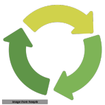

Open-Platform Advisory for Operational Intelligence
Statistical Approaches for Operational Decisions
I help CTOs and engineering leaders turn operational data into analytical systems that are statistically defensible, auditable, and maintainable. The underlying platform remains open and client-owned through KMDS and tseda, so the team keeps the engine without permanent platform lock-in. I am not selling a subscription. I am selling the judgment that created the architecture in the first place and the expertise required to keep it honest as the data-generating process changes.
Book a call · Read the methodology · Read the perspectives
This is a direct advisory model for organizations that need analytical rigor, not vendor dependency. I provide the initial mathematical architecture, the drift and gap analysis, and the ongoing calibration required to keep the model aligned with reality. The solution is transparent: it is built in open-source tooling that the client can inspect, run, and adapt without dependency. See the methodology for how the work is structured, and the Perspectives on AI and Analytics for examples of how these systems are thought about in real operational settings.
The Open-Platform Advisory Framework
The Core Principle
I help organizations convert operational complexity into rigorous statistical learning problems without proprietary platform lock-in. The framework is built for transparency, auditability, and long-term client ownership.
Where I Engage
- Phase 1: Solution Mapping — I translate physical, industrial, or enterprise use cases into tractable statistical learning problems and build feature sets that reflect the real operating system rather than superficial proxy variables.
- Phase 2: Drift & Gap Analysis — I identify when data drift, concept drift, or structural degradation are beginning to invalidate model assumptions.
- Phase 3: Remediation & Calibration — I rework feature definitions, decomposition windows, and model assumptions so the analytical system remains stable and decisionally valid in production.
The Open Assets
- KMDS: A knowledge-centric framework for transparent, reproducible machine learning workflows and operationally grounded feature definition.
- tseda: A Python package for analyst-guided time-series decomposition, allowing teams to separate trend, seasonality, and noise while preserving explicit statistical traceability.
Why This Model Is Technically Credible
- The solution is transparent — it is built in an open-source framework that the client can inspect, run, and adapt without vendor dependency.
- Problem framing is the first hard problem — the work begins by mapping the business question to the right set of statistical tasks, defining the validation methodology that proves the framing is right, and establishing the monitoring approach that keeps the system honest as it operates. Foundation models can give a team a baseline, but building a solution that customers and modelers truly understand and can maintain is a different question.
- Monitoring and maintenance are a core part of the solution — another critical dimension of a sustainable machine learning or statistical learning system is how we monitor performance, detect when the operating environment has changed, and know when it is time to change the model or the underlying assumptions.
- The engagement is about decision quality, not labor arbitrage — I am not positioned as a generic software vendor or a body-for-hire. I work as a specialist in analytical architecture, modeling rigor, and operational stewardship.
- The value is ongoing stewardship — the work is framed around mathematical design, calibration, and maintenance so the analytical system remains honest as the operating environment changes.
Perspectives on AI and Analytics
I write practical, grounded commentary on the real work of building useful AI and analytics systems: where the business problem starts, how the data becomes a model, and what it takes to turn a promising idea into something reliable enough to operate.
If you are interested in my perspectives on AI — especially how generative AI and LLM tools can complement a data scientist in real analytical work — see the Perspectives on AI and Analytics page.
Consulting Offering
I work with CTOs, VP-level engineering leaders, and operating teams that already have the data but do not yet have a statistically defensible architecture for turning it into reliable decisions. My work begins with the question most technical programs skip: what is the actual decision process, and what statistical structure is required to keep that decision valid as the operating environment changes?
You bring the business context, the operational history, and the pressure to make better decisions at scale. I translate that context into feature engineering, model structure, and analytical architecture that are explainable, auditable, and sustainable. Because the foundation is open and owned by your organization, the resulting analytical logic remains inside the company rather than being trapped inside a vendor platform.
The highest-value engagements are not general software delivery projects. They are focused advisory engagements around featurization, model mapping, and drift remediation. I design feature sets, interaction terms, correlation-adjusted signals, and transaction- or sensor-ready datasets that improve model quality and create a more defensible operating system for production decisions.
For many organizations, the most valuable work is mathematical maintenance: determining whether the model is still measuring the same thing, whether the feature definitions still reflect the actual process, and whether recalibration is required before the system drifts into poor decisions that are difficult to trace back to their source.
Watch a short video describing my background and approach.

Background
25+ years of engineering experience developing analytical solutions across retail, telecom, transport, finance, government, and software tools, plus formal PhD-level training in machine learning. Selected publications spanning scalable statistical learning, graph-oriented analytical systems, optimization, and enterprise-scale ML infrastructure are available on Google Scholar.
Let’s Talk
If your team already has data, operational pressure, and an unclear statistical approach, I can help define the right path and keep it valid as conditions change. Book a call to discuss the decision process, the data reality, and the remediation path.
I work with CTOs, engineering leaders, and technical operators on focused advisory engagements around analytical strategy, feature design, model mapping, and drift remediation. The work is structured for clarity, accountability, and durable operating value.
Note: I provide strategic ML advisory and specialized decision architecture directly to enterprise clients. I do not take on general implementation-tier projects, staffing arrangements, or W2 agency placements. Third-party brokers and staffing firms seeking to place resources or support general delivery work will not be considered.
LinkedIn · GitHub · Google Scholar
Real-World Example
If you would like to see how this methodology can be applied to a real-world dataset, check out the SBA Loan Analytics example and the technical overview article.
The broader context for the approach is available in the methodology and Perspectives on AI and Analytics sections.